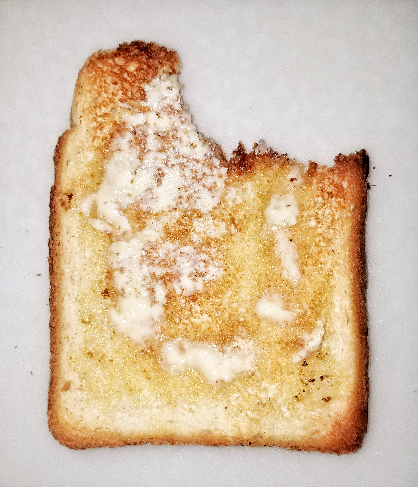

Toast

Description
Have you ever had buttered toast? If not stop scrolling, because you are in
for quite a treat. Two ingredients combine to make one of the most dynamic foods
of all time.
Ingredients
- Bread - 1 slice, any type will do (I prefer sourdough)
- Butter - Ideally salted
Steps
- Toast your slice of bread.
- Use a knife to spread butter across your toasted bread.
- Continue until full, experiment with toasting time and butter amount.